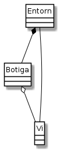

Exercici 05_03. La classe
Exercici 05_03. La classe Entorn¶
Context
Carpeta de lliurament:
05_03_entorn/Continguts relacionats: El celler de la Bona Estrella
Com lliurar-lo: instruccions
[✓] Exercici amb autoavaluació
Enunciat
Ara que ja tenim les classes principals de la nostra aplicació, passem a codificar el programa per que la Sra. Estrella pugui interaccionar amb la botiga.
Ens hem decidit per una opció molt senzilla, usable des de consola. La Sra. Estrella, quan era jove havia fet servir una de les primeres versions de l’editor ed. Sí, la nostra clienta té un passat. Per ella, les coses amb moltes coloraines i animacions que es fan ara, li semblen poc serioses, així que pensem que una aplicació en consola li estarà bé.
Així, implementarem la classe Entorn que disposa d’un main() que,
en ser executat, ofereix un prompt on poder anar escrivint les
comandes.

El prompt serà botiga> i les comandes que acceptarà són:
"ajuda": ofereix un text d’ajuda amb la informació de les comandes disponibles"afegeix": permet afegir un nou vi a la botiga. En executar-ho, el programa demanarà interactivament pels diferents valors que composen un vi: nom, preu i estoc.La interacció tindrà el següent aspecte:
botiga> afegeix nom (enter cancel·la)> Roura blanc preu (en cèntims)> 1223 estoc (enter sense estoc)> Introduït: Vi: Roura blanc Preu: 1223 Estoc: 0 botiga>
Fixa’t que les dades del vi apareixen tabulades per facilitar la lectura, i acaben amb un salt de línia extra. Curiosament s’assembla molt a la sortida de
Vi.toString(). Bé, de fet són iguales!En cas que no ens introdueixin nom, suposarem que no vol continuar afegint el vi, i tornarem al prompt.
El preu és llegit i mostrat en cèntims, tal i com es guarda a
Vi. No és la manera més còmoda ni la més llegible, i en un futur haurem de fer alguna cosa per millorar-ho. De moment, ens està bé així.Si pel preu o per l’estoc ens introdueixen una cadena buida, considerarem que volen indicar
0.Si no és una cadena buida, el valor ha de correspondre a un enter positiu. Si no és el cas, mostrarem el missatge
"ERROR: el valor ha de ser un enter positiu"i donarem per cancel·lada l’operació.En cas que finalment no s’hagi pogut introduir el vi (el mètode
Botiga.afegeix()ens retornanull, es mostrarà el missatge"ERROR: no s'ha pogut afegir". Recordem que això pot passar perquè ens hem quedat sense espai o bé perquè ja existia un vi amb aquest nom. De moment la Sra. Estrella haurà d’acceptar aquesta pobre informació."cerca": permet cercar un vi a la botiga. En executar-ho, el programa demanarà interactivament el nom.La interacció tindrà el següent aspecte:
botiga> cerca nom (enter cancel·la)> Roura blanc Trobat: Vi: Roura blanc Preu: 1223 Estoc: 0 botiga>
En cas que no s’introdueixi nom, es considerarà que no vol continuar amb la cerca i es tornarà al prompt.
Si no es troba cap vi amb aquest nom, es mostrarà el missatge:
"No trobat"Finalment, si es troba un vi, es mostren els seus detalls exactament igual que en el cas de l’opció
"afegeix"."modifica": permet modificar les dades d’un vi. En executar-ho, el programa demanarà interactivament el nom i la resta de dades del vi.La interacció tindrà el següent aspecte:
botiga> modifica nom (enter cancel·la)> Roura blanc preu (enter 1223)> 1300 estoc (enter 0)> 24 Modificat: Vi: Roura blanc Preu: 1300 Estoc: 24 botiga>
Si no es troba cap vi amb aquest nom, es mostrarà el missatge:
"No trobat"Si pel preu o per l’estoc ens introdueixen una cadena buida, considerarem que volen indicar mantenir el valor antic.
Si no és una cadena buida, el valor ha de correspondre a un enter positiu. Si no és el cas, mostrarem el missatge
"ERROR: el valor ha de ser un enter positiu"i donarem per cancel·lada l’operació sense fer cap modificació."elimina:: permet eliminar un vi de la botiga. Funciona molt similar a"modifica". En aquest cas, però, mostrarà els atributs del vi a eliminar i demanarà confirmació:La interacció tindrà el següent aspecte:
botiga> elimina nom (enter cancel·la)> Roura blanc A eliminar: Vi: Roura blanc Preu: 1300 Estoc: 24 Segur?> Sí Error: no s'ha pogut eliminar botiga>
En cas que finalment no s’hagi pogut eliminar el vi (el mètode
Botiga.elimina()ens retornanull, es mostrarà el missatge"ERROR: no s'ha pogut eliminar". Recordem que això pot passar perquè estem intentant eliminar un vi que encara té estoc. De moment la Sra. Estrella haurà d’acceptar aquesta pobre informació.Si, per contra, s’ha pogut eliminar el vi, el missatge serà
"Eliminat".Si ens diuen que no a la petició de confirmació, mostrarem el missatge
"No eliminat".Nota: cal vèncer la temptació de controlar aquí si es pot o no eliminar un vi que té estoc. Això és quelcom que ha de decidir
Botiga. Malauradament, amb el disseny actual haurem de dir que no s’ha pogut eliminar sense especificar perquè. Ja ho arreglarem."surt": finalitza l’execució del programa.El programa s’acomiada dient
"adéu".
En cas que la comanda introduïda no sigui una de les esperades, mostrarà el
missatge "ERROR: comanda no reconeguda. Escriviu help per ajuda".
En iniciar l’execució, el programa mostra un missatge de benvinguda:
"Celler La Bona Estrella. Escriviu ajuda per veure opcions." i tot
seguit mostra el prompt.
Què haig de fer?¶
Implementa la classe Entorn.
Una simulació d’execució del programa seria:
$ java && java Entorn
Celler La Bona Estrella. Escriviu ajuda per veure opcions.
botiga> afegeix
nom (enter cancel·la)> Roura blanc
preu (en cèntims)> 2134
estoc (enter sense estoc)>
Introduït:
Vi: Roura blanc
Preu: 2134
Estoc: 0
botiga> afegeix
nom (enter cancel·la)> El Quinta 2018
preu (en cèntims)> 1485
estoc (enter sense estoc)> 24
Introduït:
Vi: El Quinta 2018
Preu: 1485
Estoc: 24
botiga> cerca
nom (enter cancel·la)> Roura blanc
Trobat:
Vi: Roura blanc
Preu: 2134
Estoc: 0
botiga> surt
adéu
Pista¶
Llegeix això només si trobes problemes per pensar com començar a
implementar Entorn.
Una possible implementació (parcial és clar) seria la següent:
1 2 3 4 5 6 7 8 9 10 11 12 13 14 15 16 17 18 19 20 21 22 23 24 25 26 27 28 | public class Entorn {
private final Botiga botiga = new Botiga();
public static void main(String[] args) {
Entorn entorn = new Entorn();
mostraBenvinguda();
while (true) {
mostraPrompt();
String comanda = Entrada.readLine().strip();
if (comanda.isEmpty()) continue;
if (comanda.equals("surt")) break;
switch (comanda) {
case "ajuda": mostraAjuda();
break;
case "afegeix": entorn.processaAfegeix();
break;
case "cerca": entorn.processaCerca();
break;
case "modifica": entorn.processaModifica();
break;
case "elimina": entorn.processaElimina();
break;
default: mostraErrorComandaDesconeguda();
}
}
mostraComiat();
}
/* … */
}
|
En aquesta implementació he optat per fer dinàmics els mètodes
d”Entorn que han de tractar la botiga, i estàtics els altres, com ara
els que mostren missatges. Podries decidir fer-ho tot estàtic i, amb el
que sabem de moment del futur de l’aplicació que estem desenvolupant,
probablement és una decisió acceptable.